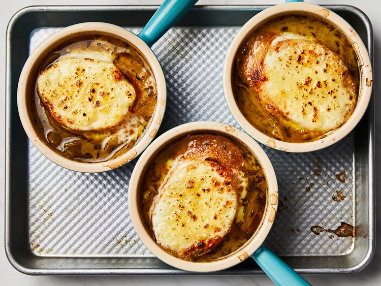

French Onion Soup

Description
Before you embark on the culinary journey of crafting a comforting bowl of French onion soup, allow yourself to be transported to the cozy streetside cafes of Paris, where this timeless classic was born. French onion soup, or "Soupe à l'oignon gratinée," is a cherished emblem of French cuisine. It embodies the essence of rustic elegance, with its caramelized onions, rich beef broth, and a golden blanket of bubbling Gruyère cheese. Just the aroma of onions slowly simmering in butter can evoke a sense of warmth and nostalgia that transcends borders and generations.
This recipe will guide you through the art of transforming humble onions into a symphony of flavors. It's a journey that involves patience and a touch of culinary alchemy. The result? A soul-soothing soup that captures the essence of a French bistro in every spoonful. So, don your apron, sharpen your knife, and prepare to embark on a culinary adventure that celebrates the heartwarming essence of French onion soup.
Ingredients
- ½ cup unsalted butter
- 2 tablespoons olive oil
- 4 cups sliced onions
- 5 cups beef broth
- 2 tablespoons dry sherry
- 1 teaspoon dried thyme
- 1 pinch salt and pepper to taste
- 4 slices French bread
- 4 slices provolone cheese
- 2 slices Swiss cheese, diced
- ¼ cup grated Parmesan cheese
Steps
- Step 1: Gather all ingredients.
- Step 2: Melt butter with olive oil in an 8-quart stock pot over medium heat. Add onions to butter and continually stir until tender and translucent. Do not brown the onions.
- Step 3: Add beef broth, sherry, and thyme. Season with salt and pepper. Let simmer for 30 minutes.
- Step 4: Meanwhile, preheat the oven's broiler.
- Step 5: Ladle soup into oven-safe serving bowls and place one slice of bread on top of each (bread may be broken into pieces if you prefer). Layer each slice of bread with a slice of provolone, 1/2 slice diced Swiss and 1 tablespoon Parmesan cheese.
- Step 6: Place bowls on a cookie sheet and broil in the preheated oven until cheese bubbles and browns slightly, 2 to 3 minutes.
- Step 7: Serve hot and enjoy!